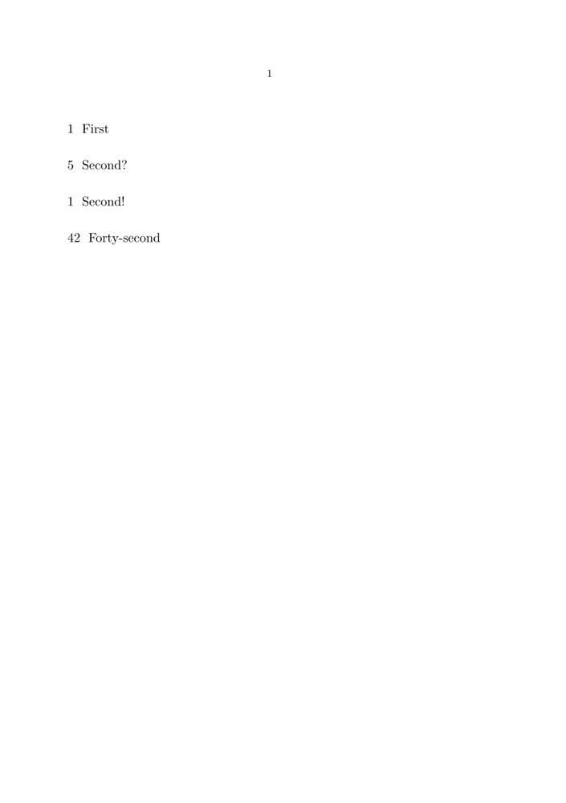

Syntax (autogenerated)
| \setupheadnumber[...][...] | |
| [...] | section |
| [...] | [+-]number |
Syntax
| \setupheadnumber[...][...] | |
| [...] | section |
| [...] | number +number -number |
Description
Allows manipulation of the current heading counters. The first argument determines which heading is to be changed, e.g. section, chapter. The second argument takes an integer; if unsigned, the section number will be set to this value. Nota bene: with the next call to the heading the number will be incremented again. Thus, in order for the next heading to carry a specific number n it would be necessary to set its number to n-1.
If the second argument is signed, the heading’s number will be increased or decreased by the specified amount instead.
Example
-
\starttext \section{First} \setupheadnumber[section][+4] \section{Second?} \setupheadnumber[section][-5] \section{Second!} \setupheadnumber[section][41] \section{Forty-second} \stoptext
- 
See also
Help from ConTeXt-Mailinglist/Forum
All issues with: